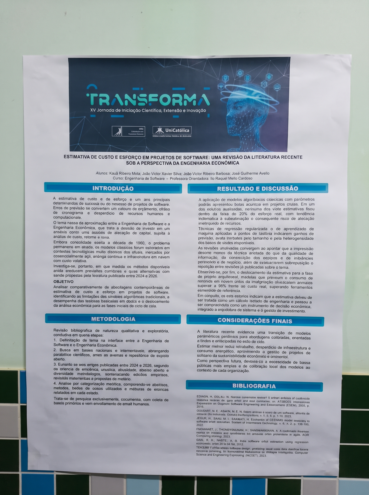
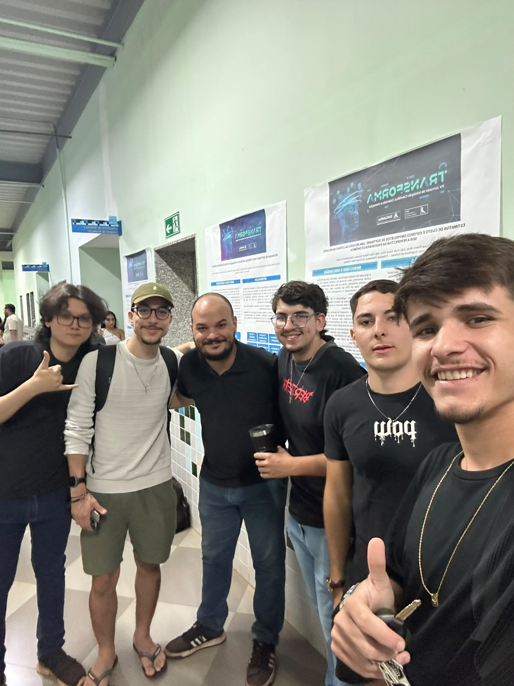
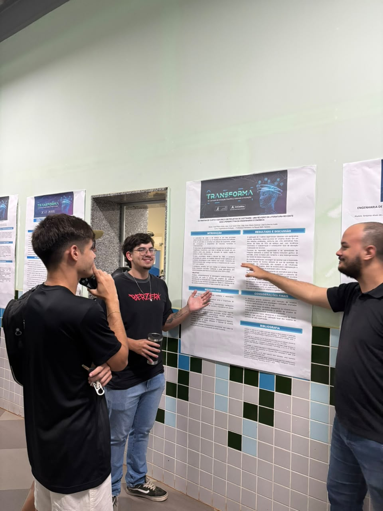
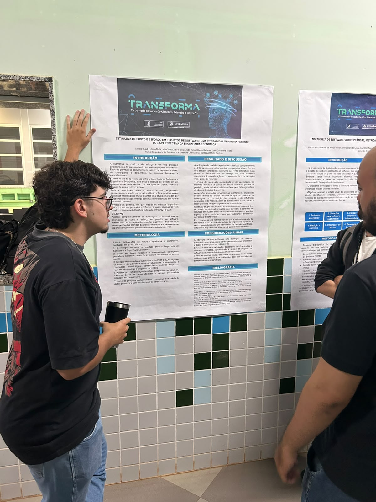
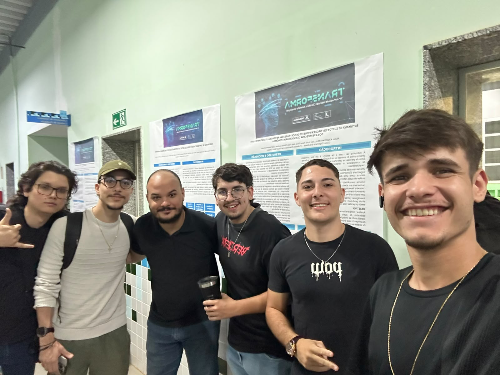

Por: Arthur da Rosa Lacerda, Otávio ribeiro dos santos e Jefferson Carneiro | Data: 07 de Outubro de 2026

Objetivo do projeto
O objetivo central da equipe é analisar comparativamente as abordagens contemporâneas de estimativa de custo e esforço no desenvolvimento de softwares. O projeto busca identificar as limitações dos modelos algorítmicos mais antigos, avaliar o desempenho de técnicas modernas baseadas em dados e propor um deslocamento da análise econômica para as fases iniciais do ciclo de vida dos projetos.
O problema a ser resolvido
No cenário atual de tecnologia, erros de previsão em projetos geram grandes prejuízos, como o estouro de orçamentos, atrasos crônicos no cronograma e um severo desperdício de recursos humanos e computacionais. O problema reside no fato de que os modelos clássicos de estimativa, desenvolvidos nos anos 80, não se encaixam mais na realidade atual marcada por metodologias ágeis, entregas contínuas e infraestrutura em nuvem com custos altamente variáveis.
Área de atuação e Público-alvo
Área de atuação: O projeto se encontra exatamente na interface entre a Engenharia de Software e a Engenharia Econômica, focando fortemente na gestão, no planejamento financeiro e sustentabilidade da área de tecnologia.
Público-alvo: A pesquisa é voltada diretamente para gerentes de projeto, arquitetos de sistemas, engenheiros de software e lideranças de equipes de desenvolvimento ágil que precisam tomar decisões embasadas antes de iniciar a construção de um sistema.
Partes Interessadas (Stakeholders)
Além das equipes de desenvolvimento, as principais partes interessadas incluem empresas de tecnologia e startups (que reduzem riscos financeiros), investidores (que buscam garantir o retorno sobre o investimento), provedores de infraestrutura em nuvem e, por fim, os próprios clientes que financiam o software, já que estimativas precisas evitam custos adicionais e repasses indesejados durante a execução do projeto.
Estado do mercado e Concorrentes
Hoje, as abordagens que dominam o mercado para lidar com a estimativa de custos estão divididas entre modelos clássicos acadêmicos e calculadoras de provedores em nuvem. Como o projeto é uma revisão, as soluções "concorrentes" que buscam resolver a mesma dor no mercado são:
- Modelo COCOMO II: Um dos modelos paramétricos tradicionais mais conhecidos no mercado, focado em estimar tempo e esforço. Contudo, o projeto evidencia que ele sofre com baixa precisão nos métodos de desenvolvimento atuais.
- AWS Pricing Calculator: Ferramenta comercial amplamente utilizada para prever o consumo de recursos na nuvem. O estudo aponta que aplicar modelos orientados aos dados ainda na fase arquitetural pode superar a acurácia dessas calculadoras padrão.
Diferencial e Tecnologias
Diferencial: O grande destaque do trabalho é tratar a estimativa não apenas como um cálculo matemático isolado, mas como um instrumento direto de decisão econômica. A pesquisa mostra que aplicar a previsão logo na fase da arquitetura do sistema — com modelagem baseada em fluxos de dados — conseguiu atingir uma acurácia superior a 96% frente ao custo real do projeto.
Tecnologias envolvidas: O projeto cita técnicas de regressão regularizada, algoritmos de aprendizado de máquina (Machine Learning) aplicados a pontos de história (story points) e metodologias de modelagem de recursos orientada a fluxos de dados (Dataflow).
Análise crítica do trio
Como repórteres, consideramos a temática extremamente madura. O ponto forte é que a pesquisa ataca uma dor real das empresas: o desperdício de dinheiro em TI e o impacto da sustentabilidade. Como ponto a melhorar, notamos que a eficácia dessas novas inteligências depende muito da qualidade dos dados gerenciais disponíveis, o que é um gargalo no Brasil. Como sugestão para a equipe, recomendamos a criação de um repositório público na UniCatólica para coletar métricas reais de projetos locais, ajudando na calibração desses modelos para a realidade das empresas tocantinenses.
Equipe e Autorização
Integrantes do projeto analisado: Kauã Ribeiro Mota, João Victor Xavier Silva, João Victor Ribeiro Barbosa e José Guilherme Avello. Professora Orientadora: Ila Raquel Melo Cardoso.
A autorização formal da equipe para a captação das fotos e publicação das informações sobre este projeto foi devidamente registrada e o comprovante entregue via AVA.
Galeria de Fotos




